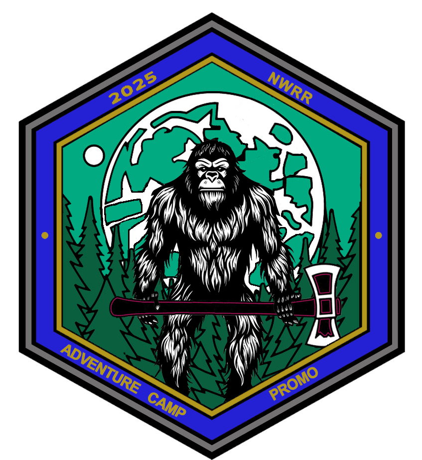

NW Royal Rangers Academy
The Academy Program, or JLDA, is an advanced leadership and skill training initiative designed to equip young men with the tools to mentor others, grow spiritually, and excel in outdoor and ministry-related activities. It emphasizes leadership development, specialized skill training, and spiritual growth, while fostering camaraderie and service opportunities. Graduates are recognized for their achievements and prepared for greater roles in Royal Rangers and their communities.
There are only two camps that are required, JTC and AJTC.
For a list of camps and their descriptions, click this link